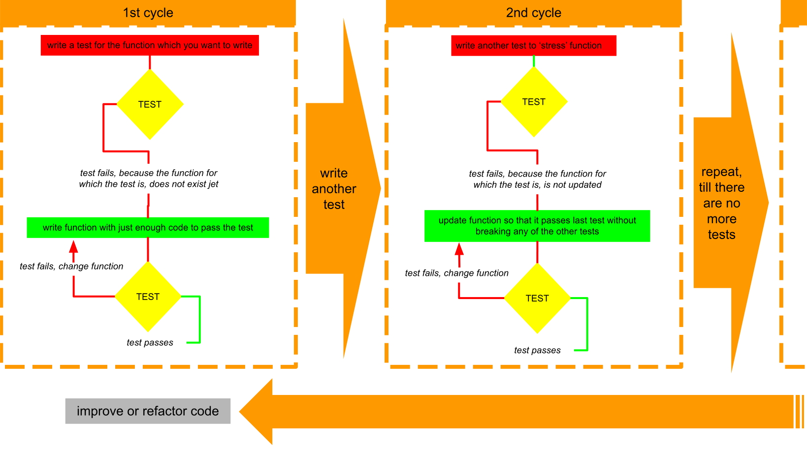

Software Testing
Comparing manual to automated testing
manual testing / user testing
Checks if your project works according to your user stories, in different browsers and at different resolutions. The tester impersonates a user of your application and manually tests everything by sitting there, clicking on the buttons, and filling out the forms, testing all of the logic.
- USER EXPERIENCE: how intuitive, visual impression, ...
- SLOW: it's time-consuming
- RESOURCE INTENSIVE: depending on the size of the project, it may require a large team of people
- HIGH ERROR RATE: edge cases can be missed, the testers may have biases or blind spots or they may be fatigued by the amount of manual tasks that need to be performed
automated testing
Code is used to test code.
- QUICKER: many hundreds of tests can be run against our project in a short space of time
- EFFICIENT: tests are usually written by the programmer as the project is being developed, errors are picked up early
- SPECIFIC: tests can be written for very specific cases
- LIMITED: tests are only as good as the questions we ask, if we're not asking the right questions, then our tests can end up as purely decorative and give us a false impression
- FUNCTION ONLY: don't test the User Experience either
The "Test Driven Development" Paradigm
comparison between "Behavior Driven Development" & "Test Driven Development"
| Behavior Driven Development BDD | Test Driven Development TDD |
|---|---|
AS A ...
user
I WANT ...
to be able to click the toggle button
SO THAT ...
I can log out of my account
GIVEN ...
that the user is already logged in
WHEN ...
the logout button is clicked
THEN ...
the user is logged out and returned to the login screen |
|
The RED-GREEN-REFACTOR Cycle
- RED:
first, we write tests that we know will fail and then, we write just enough code to pass the test
(if the test would not fail then the question would be wrong, it also helps to just answer the test with the function) - GREEN:
get that test to pass, without breaking any of our previous tests - REFACTOR:
finally, we think about ways that we can improve or refactor our code
how to phrase test questions
R-I-T-E
- Readable:
The description for the test and the failure messages should make it clear what the tests actual and expected behavior is, and why. A well-written test has minimal test code, tests one thing, and one thing only, and it's clear at a glance what the test should do. - Isolated:
Our tests should be "atomic" or isolated from one another. We shouldn't have to pass one test before we can pass another. Instead, we should be able to run them in any order and they'll still pass. - Thorough:
Our tests should also be thorough, expect the unexpected! For example, what happens if someone enters in something totally unrelated to the expected input. - Explicit:
Finally, our test should be explicit. This ties in with code readability above, if someone looks at the test it should be obvious how to replicate the result.
definition fo "unit testing" and "integrated testing"
- "unit tests": are for individual modules
- "integration tests": check how multiple modules work together